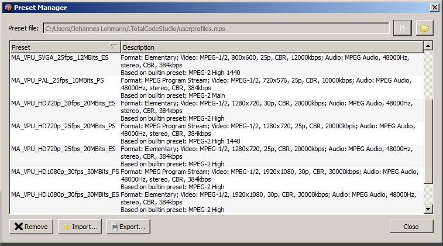
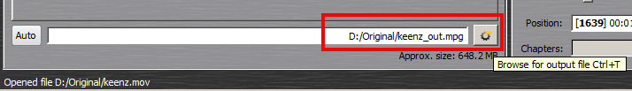

To convert your content (e.g. *.avi or *.mov) into the MA VPU conform MPEG2 format, we recommend to use the Rovi TotalCode Studio transcoding tool.
The free demo version of the application can be downloaded at the Rovi homepage: http://www.rovicorp.com
The demo version is fully functional, though it adds a watermark to processed video (without harming your source material). Moreover, it has an AAC Audio encoding limitation of 30 seconds. Then audio output is cut. When you are interested in obtaining the full version, you have to contact Rovi to obtain a license for the software. Unlike the previous version of the software, Main Concept Reference, you can only buy the complete version. The purchase of single codecs is not supported any more. The documentation of Rovi TotalCode Studio is included in the demo version. Press F1 on you Keyboard to open it. An Adobe PDF Reader has to be installed.
A Preset File created by MA Lighting is available in the download section for the Rovi TotalCode Studio software, that does cover the most impotant applications. It is labelled "“MA_VPU_Rovi_TotalCode_Studio_Presets_V*.mps”". Please note that this is not pre-installed on the VPU.
How to use Presets in Rovi TotalCode Studio:
MA Lighting provides the most imortant presets to convert video and audio content in Rovi TotalCode Studio. These presets cover the most important applications. The next passage will cover how to import and use these presets. If the presets do not cover the needed purpose, the user can load and adjust the settings. These settings also regard to explanations in the Chapter Content Specifications
The preset files are can be categorized in Program Stream (Video and Sound are within the encoded file) and Elementary Stream (only Video is encoded). So each preset has a _PS (Program Stream) or _ES ending.
The following Resolutions are selectable from the list:
FramerateResolution [Pixel]PAL25fps720x576NTSC29.97fps720x480VGA 25 / 30fps640x480SVGA25 / 30 fps800x600XGA25 / 30 fps1024x768HD720p25 / 30 fps1280x720HD1080p25 / 30 fps1920x1080
| Description | Framerate | Resolution [Pixel] |
|---|---|---|
| PAL | 25 fps | 720x576 |
| NTSC | 29.97 fps | 720x480 |
| VGA | 25/30 fps | 640x480 |
| SVGA | 25/30 fps | 800x600 |
| XGA | 25/30 fps | 1024x768 |
| HD720p | 25/30 fps | 1280x720 |
| HD1080p | 25/30 fps | 1920x1080 |
| E.g. selecting the preset „MA_VPU_XGA_30fps_15MBits_PS“ means: |
| Resolution XGA: 800x600 Pixel |
| Frame Rate: 30fps progressive |
| Bitrate: 15 Mega Bit per Second |
| Stream Type: Program Stream |
Use of the MA Presets in Rovi TotalCode Studio:
1. Start Rovi TotalCode Studio
2. Click on Tools / Preset Manager or Press F6 on your keyboard
3. Import the file „MA_VPU_Rovi_TotalCode_Studio_Presets_V_2_5"
4. All presets are now listed in the Preset Manager

5. Open Media, load the video file you want to transcode from your hard drive
6. Drag the File Container of that file in the lower (output) part to assign it the encoder
7. Select the corresponding Preset that fits the original file properties
8. Check if the settings are coresponding to your input format and that they match your wanted output format. If necessarry adjust the resolution or framerate
9. Set name and location of the Output File (transcoded clip)

10. Start Transcoding by pressing the Play button
Rovi Totalcode Studio does allow several methods to automatically encode videos. This will be the batch converter and the watch folder. We will now go deeper into the batch converter. The watch folder is explained in the Tocalcode Studio manual.
Batch conversion in Roi Total Code
1. If you have already imported and assigned a video to be transcoded as described before, you can add this job to a queue. Simply press the „add to batch job list“ button
2. If needed, entries in the batch list can be selected and edited again in the main window of the application by using a right click on the entry and then selecting „Edit Settings "
3. When all settings are adjusted, use the function „Update Job“ in the Batch Window to update the batch list entry
4. When all files are set into the batch list, press the „Start“ button to activate the process